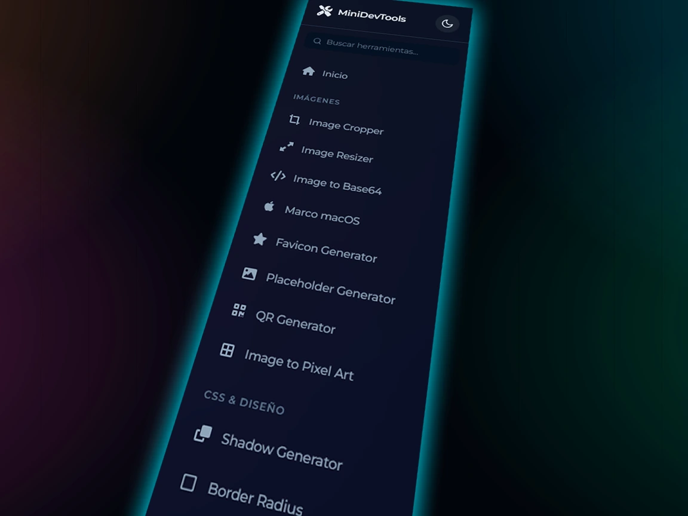
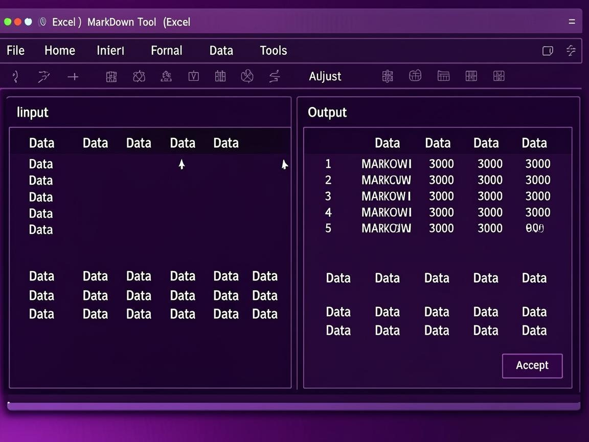
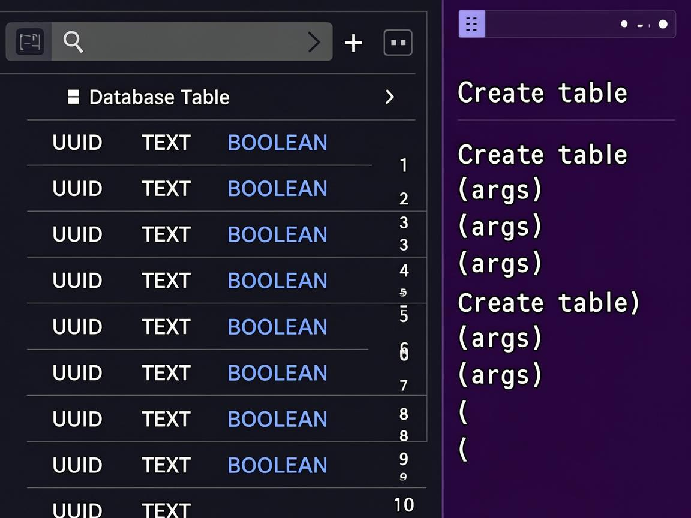

Conversores, formateadores, generadores, analizadores y mucho mas. Todo funciona directamente en el navegador, sin frameworks, sin backend, sin complicaciones.
Sidebar con busqueda instantanea y categorias. Encontra cualquier herramienta en segundos, no importa cuantas tengas.

Converti tablas de Excel a Markdown y viceversa, genera schemas SQL completos para Supabase con GRANTs y RLS, todo desde el navegador.

Constructor visual de tablas SQL con tipos PostgreSQL, foreign keys, indices, GRANTs automaticos para roles anon/authenticated/service_role y Row Level Security con policies basicas.

Desde conversores y formateadores hasta generadores de imagenes y schemas SQL. Cada herramienta esta disenada para hacer una cosa y hacerla bien.
Todo lo que necesitás saber sobre MiniDevTools en un vistazo.
render, lo registrás en registry.js, y listo. El sidebar, el buscador y el lazy loading la detectan automáticamente. Si tenés una idea, abrí un issue y lo charlamos.localStorage, así que la próxima vez que entres ya está con tu tema preferido sin tener que configurar nada de nuevo.Es gratis, es open source, y funciona sin instalar nada. Hacé click y empezá a usar las herramientas que necesites.